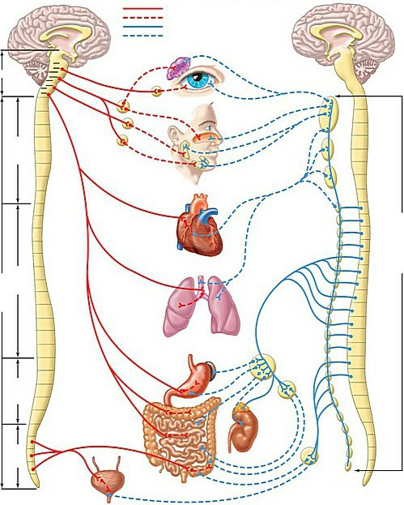

Vraag 1
Casus Mevrouw Pieterse (7 vragen, 18 punten)
Mevrouw Pieterse, 56 jaar, heeft een drukke baan als buschauffeuse. Ze heeft het afgelopen jaar veel overgewerkt vanwege een reorganisatie, waarbij enkele directe collega's werden ontslagen. Ze is moe, slaapt niet zo goed en is blij dat ze eindelijk een weekje op vakantie kan naar Griekenland. Tijdens haar vakantie komt ze aan haar welverdiende rust toe. Ze slaapt veel, eet lekker en onderneemt wat activiteiten. Bij thuiskomst voelt ze zich nog steeds niet uitgerust. Omdat ze zich zorgen maakt om de vermoeidheid (zou het kanker kunnen zijn?) bezoekt ze de huisarts. Die constateert diabetes type 2. Een opluchting voor mevrouw Pieterse dat er niets ernstigs aan de hand is. Ze denkt zelf dat de diabetes is veroorzaakt door het eten van de vele druiven in Griekenland. Zij hoopt door beter op haar voeding te letten van haar diabetes af te kunnen komen. De pillen die haar huisarts voorschrijft (Metformine) laat ze daarom nog even links liggen. Ook zal ze met haar baas overleggen om wat rustiger aan te doen op haar werk met de verwachting dat de vermoeidheid verder zal afnemen. Wel is ze via een kennis lid geworden van een online lotgenotenforum voor mensen met diabetes type 2. Hier kan ze haar plannen delen die ze heeft gemaakt om gezonder te gaan eten.
Mevrouw Pieterse, 56 jaar, heeft een drukke baan als buschauffeuse. Ze heeft het afgelopen jaar veel overgewerkt vanwege een reorganisatie, waarbij enkele directe collega's werden ontslagen. Ze is moe, slaapt niet zo goed en is blij dat ze eindelijk een weekje op vakantie kan naar Griekenland. Tijdens haar vakantie komt ze aan haar welverdiende rust toe. Ze slaapt veel, eet lekker en onderneemt wat activiteiten. Bij thuiskomst voelt ze zich nog steeds niet uitgerust. Omdat ze zich zorgen maakt om de vermoeidheid (zou het kanker kunnen zijn?) bezoekt ze de huisarts. Die constateert diabetes type 2. Een opluchting voor mevrouw Pieterse dat er niets ernstigs aan de hand is. Ze denkt zelf dat de diabetes is veroorzaakt door het eten van de vele druiven in Griekenland. Zij hoopt door beter op haar voeding te letten van haar diabetes af te kunnen komen. De pillen die haar huisarts voorschrijft (Metformine) laat ze daarom nog even links liggen. Ook zal ze met haar baas overleggen om wat rustiger aan te doen op haar werk met de verwachting dat de vermoeidheid verder zal afnemen. Wel is ze via een kennis lid geworden van een online lotgenotenforum voor mensen met diabetes type 2. Hier kan ze haar plannen delen die ze heeft gemaakt om gezonder te gaan eten.
Ziektepercepties vormen een belangrijke schakel in het ziektegedrag van mevrouw Pieterse. De huisarts besluit deze in kaart te brengen met de IPQ. De aard van de klachten is duidelijk: type 2 diabetes.
Noem de overige vier ziekteperceptie-dimensies en hoe deze zich bij mevrouw Pieterse uiten.
Noem de overige vier ziekteperceptie-dimensies en hoe deze zich bij mevrouw Pieterse uiten.
Modelantwoord
Tijdspad: het gaat weer over
Gevolgen/consequenties: vermoeidheid
Controle: beter op voeding letten
Oorzaak: te veel druiven eten
4 punten bij alles goed; 3 punten bij 4 goed met niet alle voorbeelden; 2 punten bij 3 goed met 3 voorbeelden; 1,5 punten bij 3 goed met minder dan 3 voorbeelden; 1 punt bij 2 goed met 2 voorbeelden; 0,5 punt bij 2 goed zonder voorbeelden; 0,5 punt bij 1 goed met voorbeeld. 1 goed zonder voorbeeld is 0 punten.
Vraag 2
Mevrouw Pieterse laat de voorgeschreven medicatie nog even links liggen.
In welk kwadrant van het noodzaak-bezorgdheidsmodel bevindt zij zich?
In welk kwadrant van het noodzaak-bezorgdheidsmodel bevindt zij zich?
Modelantwoord
Onverschillig
1 punt
Vraag 3
Benoem de stadia van het stages of change model en geef per stadium aan waarom mevrouw Pieterse hier wel of niet in zit.
Modelantwoord
Precontemplation, contemplation, preparation, action, maintenance, relapse.
Preparation: ze heeft de plannen gemaakt en gedeeld met lotgenoten; overleg met haar baas. Niet contemplation omdat ze al plannen gemaakt heeft, ze ziet het nut van de gedragsverandering in. En nog geen action omdat ze nog niet begonnen is.
1 punt voor juiste stadium met uitleg + 2 punten voor juiste 2 andere stadia met juiste uitleg. 1 punt voor maar 1 van andere juiste stadia met uitleg. Zonder uitleg geen punten.
Vraag 4
De klachtenpresentatie van mevrouw Pieterse bestaat uit verschillende onderdelen.
Wat past bij een typische vrouwspecifieke klachtenpresentatie en wat niet? Geef van beide één voorbeeld en licht je antwoord toe.
Wat past bij een typische vrouwspecifieke klachtenpresentatie en wat niet? Geef van beide één voorbeeld en licht je antwoord toe.
Modelantwoord
Wel vrouwspecifiek: plaatsen van klachten in samenhang met drukte op het werk; zoeken van hulp/steun bij lotgenoten (forum).
Niet vrouwspecifiek: stelt klacht (vermoeidheid) centraal en minder de problemen; juist niet medicijnen innemen tegen de klachten; de diagnose bagatelliseren.
Toelichting:
1. Vrouwen plaatsen de klachten vaker in samenhang met gebeurtenissen in hun leven — bij mw. Pieterse lijkt daar wellicht een beetje sprake van (ze gaat ervan uit dat de diabetes over zal gaan als ze rustiger aandoet op haar werk), maar het staat niet op de voorgrond.
2. Vrouwen stellen meer het probleem centraal (probleemgericht); dit lijkt NIET zo bij mw. Pieterse: bij haar staat de klacht (vermoeidheid) centraal.
3. Vrouwen zoeken eerder hulp en sociale steun. Deels gaat mw. Pieterse WEL vrouwspecifiek met haar klachten om: ze bezoekt een online lotgenotenforum; tegelijkertijd neemt ze juist niet haar medicijnen in — dit past NIET bij een vrouwspecifieke presentatie.
2 punten per goed benoemde klachtenpresentatie + onderbouwing. Totaal 4 punten.
Vraag 5
Vervolg van de casus
Mevrouw Pieterse gaat een aantal weken later naar de huisarts in verband met sinds vier weken bestaande aspecifieke lage rugklachten. In haar voorgeschiedenis heeft zij verder obstipatie (dat nu goed onder controle is met voeding), een verminderde nierfunctie (eGFR: 29 ml/min) i.v.m. een cystenier en een anafylactische reactie bij Naproxen. Mevrouw Pieterse drinkt geen alcohol, en rookt niet. Sinds enkele dagen gebruikt zij 2dd 500mg paracetamol. Zij vraagt aan de huisarts of zij een sterkere pijnstiller kan voorschrijven.
Mevrouw Pieterse gaat een aantal weken later naar de huisarts in verband met sinds vier weken bestaande aspecifieke lage rugklachten. In haar voorgeschiedenis heeft zij verder obstipatie (dat nu goed onder controle is met voeding), een verminderde nierfunctie (eGFR: 29 ml/min) i.v.m. een cystenier en een anafylactische reactie bij Naproxen. Mevrouw Pieterse drinkt geen alcohol, en rookt niet. Sinds enkele dagen gebruikt zij 2dd 500mg paracetamol. Zij vraagt aan de huisarts of zij een sterkere pijnstiller kan voorschrijven.
Benoem twee redenen waarom het toevoegen van ibuprofen aan de maximale dosering paracetamol geen veilige keuze is voor mevrouw Pieterse en beargumenteer waarom.
Modelantwoord
1. Door de allergische reactie op Naproxen en het voorkomen van kruisovergevoeligheid is ook het gebruik van ibuprofen gecontra-indiceerd.
2. Het gebruik van NSAID's bij een verminderde nierfunctie (eGFR <30) is gecontra-indiceerd omdat de nierfunctie verder achteruit gaat door een pre-glomerulaire vasoconstrictie.
1 punt per reden (maximaal 2 punten).
Vraag 6
Benoem twee veel voorkomende bijwerkingen waar u specifiek bij mevrouw Pieterse rekening mee moet houden bij het voorschrijven van een zwakwerkend opiaat en beargumenteer waarom.
Modelantwoord
1. Sufheid en sedatie bij haar beroep als buschauffeur (beïnvloeding rijvaardigheid).
2. Obstipatie bij haar voorgeschiedenis met obstipatie.
1 punt per reden (maximaal 2 punten).
Vraag 7
De huisarts besluit bij mevrouw Pieterse alleen de paracetamol te optimaliseren.
Wat is de maximale dosering voor mevrouw Pieterse bij chronisch gebruik?
Wat is de maximale dosering voor mevrouw Pieterse bij chronisch gebruik?
Vraag 8
Casus Meneer Lechkov (8 vragen, 15 punten)
Meneer Lechkov, 35 jaar, komt bij de huisarts in verband met hoofdpijnklachten. De huisarts kent meneer Lechkov goed: 3 jaar geleden heeft hij een dwarslaesie opgelopen, en sindsdien is hij rolstoelafhankelijk. Het was een lang en gecompliceerd revalidatietraject, waarbij er veel contact is geweest met de huisarts.
De huisarts vraagt de klachten van de hoofdpijn verder uit en denkt aan spierspanningshoofdpijn. Meneer Lechkov heeft niet veel last van de klachten. 'Ik heb wel ergere dingen meegemaakt!'. Hij vertelt vol trots dat hij recent vader is geworden en dat dat soms wel lastig combineren is met zijn werk als onderzoeker op de UvA. Hij is bezig met het afronden van zijn proefschrift, en hoopt over 6 maanden te promoveren. 'Eigenlijk heb ik twee banen tegelijk, maar hier heb ik altijd al van gedroomd!'
Meneer Lechkov, 35 jaar, komt bij de huisarts in verband met hoofdpijnklachten. De huisarts kent meneer Lechkov goed: 3 jaar geleden heeft hij een dwarslaesie opgelopen, en sindsdien is hij rolstoelafhankelijk. Het was een lang en gecompliceerd revalidatietraject, waarbij er veel contact is geweest met de huisarts.
De huisarts vraagt de klachten van de hoofdpijn verder uit en denkt aan spierspanningshoofdpijn. Meneer Lechkov heeft niet veel last van de klachten. 'Ik heb wel ergere dingen meegemaakt!'. Hij vertelt vol trots dat hij recent vader is geworden en dat dat soms wel lastig combineren is met zijn werk als onderzoeker op de UvA. Hij is bezig met het afronden van zijn proefschrift, en hoopt over 6 maanden te promoveren. 'Eigenlijk heb ik twee banen tegelijk, maar hier heb ik altijd al van gedroomd!'
Leg uit of meneer Lechkov, bezien vanuit de gezondheidstheorie van Nordenfelt, gezond is.
Modelantwoord
Ja, meneer Lechkov is gezond. Ondanks zijn beperkingen kan hij zijn vitale levensdoelen (academische carrière, hebben van een gezin) bereiken.
0,5 punt bij 'ja, hij is gezond'. 1,5 punt voor juiste onderbouwing.
Vraag 9
Critici van de gezondheidstheorie van Nordenfelt vinden dat de theorie te subjectief is.
Leg uit waarom dat een probleem kan zijn voor de gezondheidszorg.
Leg uit waarom dat een probleem kan zijn voor de gezondheidszorg.
Modelantwoord
Dan is er geen grens aan de verantwoordelijkheid van de zorg en dat is niet haalbaar. (Alle doelen zouden dan nastrevenswaardig zijn, en de gezondheidszorg is er dan verantwoordelijk voor dat iedereen zijn/haar zelf opgestelde doelen ook kan nastreven.)
2 punten voor juiste argumentatie.
Vraag 10
Noem twee aspecten van draaglast en twee aspecten van draagkracht die betrekking hebben op de casus van meneer Lechkov.
Modelantwoord
Draagkracht: optimistische persoonlijkheid; adequate coping, veerkracht (resilience).
Draaglast: 2 banen; net vader geworden.
1 punt voor 2 aspecten per domein, 1 punt voor 2+1 per domein; 0,5 punt voor 1 per domein; 0 punten voor maar 1 aspect goed.
Vraag 11
Het is gelukt, het proefschrift van meneer Lechkov is af en hij mag het verdedigen.
Wat bepaalt op de dag zelf of de verdediging een stressor is of niet?
Wat bepaalt op de dag zelf of de verdediging een stressor is of niet?
Vraag 12
Welk fysiologisch systeem is verantwoordelijk voor een 'fight-flight' reactie?
Modelantwoord
Sympathisch deel van het autonoom zenuwstelsel.
2 punten voor beide genoemd, 0,5 punt voor 1 van de 2.
Vraag 13
Meneer Lechkov heeft verschillende aanpassingen in huis, waaronder een traplift.
Onder welke regeling valt dit?
Onder welke regeling valt dit?
Vraag 14
Een uitgangspunt van de marktwerking in de zorg is dat de patiënt gezien wordt als een 'bewust kiezende zorgconsument'.
Noem één voordeel en één nadeel van dit uitgangspunt.
Noem één voordeel en één nadeel van dit uitgangspunt.
Modelantwoord
Voordelen:
- de keuzevrijheid van de patiënt wordt hiermee vergroot
- de patiënt kan de zorg afstemmen op zijn/haar behoeften
Nadelen:
- niet elke patiënt is in staat om een bewuste keuze te maken (door bijv. laaggeletterdheid of ouderdom)
- patiënten die al kwetsbaar zijn, worden op deze manier nog kwetsbaarder
1,5 punt per goed voordeel/nadeel.
Vraag 15
Door de socioloog Nicholas Jewson zijn drie typen geneeskunde omschreven.
Leg uit wat de rol was van het subjectieve verhaal van de patiënt in de hospital medicine.
Leg uit wat de rol was van het subjectieve verhaal van de patiënt in de hospital medicine.
Modelantwoord
Zeer beperkte rol van het subjectieve verhaal, omdat men zich in de hospital medicine juist richtte op de objectivering van de klachten, d.m.v. inspectie, palpatie, percussie en auscultatie.
2 punten voor volledig juiste onderbouwing.
Vraag 16
Casus Sonia (7 vragen, 16 punten)
Sonia is een 35-jarige vrouw die op het spreekuur van de huisarts komt omdat ze de afgelopen maanden toenemend last heeft van haar perfectionisme. Ze is continu bezig met dingen recht te leggen en op te ruimen. Wanneer zij thuis komt moeten haar sleutels, jas en tas eerst worden opgeruimd en uitgepakt voordat ze haar vriend kan begroeten. Tijdens het koken mag de vlam van het fornuis niet te groot worden of aan de zijkanten van de pan komen. Ook wanneer haar vriend aan het koken is controleert zij dit continu. Haar vriend heeft aangegeven dat hij er gek van wordt en vindt dat ze naar de huisarts moet. In haar studententijd heeft Sonia ook last gehad van deze klachten, maar in mindere mate. Zij woonde toen op zichzelf en niemand anders had er last van. De klachten zijn toen vanzelf over gegaan.
Sonia is een 35-jarige vrouw die op het spreekuur van de huisarts komt omdat ze de afgelopen maanden toenemend last heeft van haar perfectionisme. Ze is continu bezig met dingen recht te leggen en op te ruimen. Wanneer zij thuis komt moeten haar sleutels, jas en tas eerst worden opgeruimd en uitgepakt voordat ze haar vriend kan begroeten. Tijdens het koken mag de vlam van het fornuis niet te groot worden of aan de zijkanten van de pan komen. Ook wanneer haar vriend aan het koken is controleert zij dit continu. Haar vriend heeft aangegeven dat hij er gek van wordt en vindt dat ze naar de huisarts moet. In haar studententijd heeft Sonia ook last gehad van deze klachten, maar in mindere mate. Zij woonde toen op zichzelf en niemand anders had er last van. De klachten zijn toen vanzelf over gegaan.
De huisarts denkt aan een obsessief compulsieve stoornis.
Op welke leeftijd ontstaat deze stoornis meestal?
Op welke leeftijd ontstaat deze stoornis meestal?
Vraag 17
De huisarts wil de klachten verder exploreren met behulp van het SCEGS model. Hieronder staan vijf voorbeeldvragen die in het kader van SCEGS zouden kunnen worden gesteld.
Benoem de vijf dimensies van het SCEGS model en zet bij iedere vraag bij welke dimensie deze past.
- Heb je dwanggedachten?
- Hoe beïnvloedt jouw gedrag de relatie met je vriend?
- Gebruik je alcohol of drugs?
- Ben je verdrietig?
- Hoeveel tijd ben je per dag kwijt aan de handelingen?
Benoem de vijf dimensies van het SCEGS model en zet bij iedere vraag bij welke dimensie deze past.
- Heb je dwanggedachten?
- Hoe beïnvloedt jouw gedrag de relatie met je vriend?
- Gebruik je alcohol of drugs?
- Ben je verdrietig?
- Hoeveel tijd ben je per dag kwijt aan de handelingen?
Modelantwoord
Somatisch: Gebruik je alcohol/drugs? (1 punt)
Cognitief: Heb je dwanggedachten? (1 punt)
Emotioneel: Ben je verdrietig? (1 punt)
Gedrag: Hoeveel tijd ben je per dag kwijt aan de handelingen? (1 punt)
Sociaal: Hoe beïnvloedt jouw gedrag de relatie met je vriend? (1 punt)
Alleen noemen van dimensie is 0,5 punt.
Vraag 18
Gezien het recidiverende karakter en de ernst van de klachten op het dagelijks functioneren besluit de huisarts dat er sprake is van een angststoornis en niet alleen van angstklachten. De huisarts legt uit dat angststoornissen regelmatig voorkomen en vaak niet vanzelf verdwijnen, maar dat met uitleg en behandeling de duur en de ernst van de klachten aanmerkelijk kunnen verminderen.
Wat kan de huisarts nog meer uitleggen aan Sonia over een angststoornis zodat ze de diagnose beter begrijpt? Noem twee punten.
Wat kan de huisarts nog meer uitleggen aan Sonia over een angststoornis zodat ze de diagnose beter begrijpt? Noem twee punten.
Modelantwoord
Twee van de volgende:
- Geef uitleg over de vicieuze cirkel waarin de patiënt is terechtgekomen en over de factoren die de angst uitlokken en in stand houden.
- Bewustwording van het ontstaansmechanisme van de angst kan bijdragen aan vermindering van de klachten, doordat de patiënt de irrationaliteit van de angst inziet.
- Het streven is dat de patiënt leert de controle over de angst te hervinden, waardoor de angst beheersbaar wordt.
- Adviseer om niet toe te geven aan de neiging om angstige situaties te vermijden.
- Angst heeft de neiging om na 60 tot 90 minuten vanzelf af te nemen.
- De patiënt moet de angst doormaken om te kunnen ervaren dat het gevreesde niet gebeurt, waardoor de angst uiteindelijk uitdooft.
- Wijs de patiënt op de patiëntenvereniging: de Angst, Dwang en Fobie stichting en thuisarts.nl.
1 punt per genoemd item, max 2 punten. Indien een student meer dan twee antwoorden geeft, worden alleen de eerste twee nagekeken.
Vraag 19
De huisarts heeft extra aandacht voor het bestaan van een depressie naast de angstklachten omdat dit samen voor kan komen.
Hoe verschilt een angststoornis MET depressie van een angststoornis ZONDER depressie? Noem twee punten.
Hoe verschilt een angststoornis MET depressie van een angststoornis ZONDER depressie? Noem twee punten.
Modelantwoord
Een angststoornis in combinatie met een depressie geeft ernstiger klachten, vaker een chronisch beloop, langzamer herstel, toegenomen risico op recidief, meer psychosociale beperkingen en een slechtere kwaliteit van leven. Ook leidt de combinatie vaker tot een psychiatrische opname of suïcidepoging. (Noem er twee.)
1 punt per juist genoemde reden, max 2 punten. Indien student meer dan twee redenen geeft, alleen eerste twee nakijken.
Vraag 20
In de psychiatrie wordt onderscheid gemaakt tussen een psychiatrische classificatie (bijvoorbeeld volgens DSM-5) en een psychiatrische diagnose.
Leg uit wat deze twee begrippen inhouden.
Leg uit wat deze twee begrippen inhouden.
Modelantwoord
Een psychiatrische classificatie betreft een gestandaardiseerde beschrijving van een psychiatrische stoornis op basis van criteria. Een psychiatrische diagnose geeft een samenhangend beeld van de aandoening en omvat naast de classificatie van het syndroom ook een beschrijving van de betekenis van de symptomen voor de patiënt (het persoonlijke verhaal), de predisponerende, luxerende en onderhoudende factoren, en de gevolgen voor het functioneren.
4 punten: 2 punten voor juiste uitleg psychiatrische classificatie (niet persoonsgebonden, stoornis, criteria/symptomen); 2 punten voor uitleg psychiatrische diagnose (persoonlijk verhaal, functioneren, predisponerende/luxerende/onderhoudende factoren).
Vraag 21
Het status mentalis onderzoek bestaat uit verschillende onderdelen.
Welk onderdeel is bedoeld om specifieke subjectieve psychiatrische symptomen vast te stellen?
Welk onderdeel is bedoeld om specifieke subjectieve psychiatrische symptomen vast te stellen?
Vraag 22
Als je aan een patiënt vraagt om onmiddellijk een telefoonnummer dat wordt voorgelezen te herhalen, dan onderzoek je de:
Vraag 23
Casus Meneer De Beer (6 vragen, 13 punten)
Je bent huisarts en gaat op visite bij meneer De Beer, 52 jaar. Meneer De Beer woont al jaren op zichzelf en je ziet hem één keer per maand om te horen hoe het gaat. Hij voelt zich al vele jaren somber. Hij krijgt een uitkering.
Hij komt excentriek op je over, maar zo ken je hem. Als je binnenkomt ruik je de sigarettenlucht en alcohol vanuit de woonkamer. Daar zit meneer De Beer in zijn leunstoel. Als je vraagt waar je mag gaan zitten, kan hij daar geen antwoord op geven. Dit herken je van hem, dus besluit je zelf op de oude bank plaats te nemen. Je vraagt aan hem hoe het gaat. 'Niet goed dokter' mompelt hij. Ondertussen tikt hij hardhandig de sigaret uit in de asbak. Hij komt onrustig en bozig over en kijkt je weinig aan.
Je vraagt door en hij vertelt je dat hij de laatste tijd weer meer gedachtes heeft over de dood. Deze komen eens in de zoveel tijd weer naar boven. Tot nu toe heeft hij nog nooit een poging tot zelfmoord ondernomen.
Je bent huisarts en gaat op visite bij meneer De Beer, 52 jaar. Meneer De Beer woont al jaren op zichzelf en je ziet hem één keer per maand om te horen hoe het gaat. Hij voelt zich al vele jaren somber. Hij krijgt een uitkering.
Hij komt excentriek op je over, maar zo ken je hem. Als je binnenkomt ruik je de sigarettenlucht en alcohol vanuit de woonkamer. Daar zit meneer De Beer in zijn leunstoel. Als je vraagt waar je mag gaan zitten, kan hij daar geen antwoord op geven. Dit herken je van hem, dus besluit je zelf op de oude bank plaats te nemen. Je vraagt aan hem hoe het gaat. 'Niet goed dokter' mompelt hij. Ondertussen tikt hij hardhandig de sigaret uit in de asbak. Hij komt onrustig en bozig over en kijkt je weinig aan.
Je vraagt door en hij vertelt je dat hij de laatste tijd weer meer gedachtes heeft over de dood. Deze komen eens in de zoveel tijd weer naar boven. Tot nu toe heeft hij nog nooit een poging tot zelfmoord ondernomen.
Beargumenteer aan de hand van de symptomen in de casus welke diagnose het meest waarschijnlijk is bij meneer De Beer.
Modelantwoord
De subvorm dysthymie is het meest passend gezien de lange duur (al jaren) en hij heeft naast sombere stemming ook nog 3 andere symptomen: terugkerende gedachtes aan de dood, psychomotorische agitatie, besluiteloosheid.
Hij voldoet niet aan de DSM-criteria voor klinische depressie nu (geen 5 overige symptomen).
1 punt voor de goede diagnose, 1 punt per goed argument. (Mochten studenten met goede argumenten aan een persoonlijkheidsstoornis denken, ook goed rekenen.)
Vraag 24
Als je deze casus zo leest, welke nevendiagnose(s) kunnen dan worden gesteld?
Vraag 25
Vervolg van de casus
Je weet dat een jaar geleden de gedachtes over de dood er ook waren bij meneer De Beer en dat toen dagstructuur en het ondernemen van activiteiten hem geholpen hebben. Je besluit dit weer samen met hem op te pakken en geeft hem adviezen.
Je weet dat een jaar geleden de gedachtes over de dood er ook waren bij meneer De Beer en dat toen dagstructuur en het ondernemen van activiteiten hem geholpen hebben. Je besluit dit weer samen met hem op te pakken en geeft hem adviezen.
Welke vier algemene adviezen zijn passend voor deze patiënt qua dagstructurering en activiteitenplanning volgens de NHG-standaard depressie?
Modelantwoord
- Stel samen met de patiënt een plan op voor dagstructurering: vaste tijden van opstaan, naar bed gaan, en gebruik van maaltijden.
- Plan ook andere activiteiten, met aandacht voor balans tussen plichten en plezierige activiteiten.
- Adviseer dagelijks naar buiten te gaan, gezond te eten en sociale contacten te onderhouden.
- Adviseer fysieke activiteit waarbij rekening wordt gehouden met belastbaarheid en belangstelling van de patiënt.
(Alleen 'dagstructuur' of 'activiteitenplanning' noemen is niet voldoende — er moet uitleg zijn hoe je dat vormgeeft.)
1 punt per goed antwoord.
Vraag 26
Ziektegedrag wordt bepaald door de ervaren last van klachten.
Noem vier factoren die de ervaren last van klachten kunnen beïnvloeden.
Noem vier factoren die de ervaren last van klachten kunnen beïnvloeden.
Modelantwoord
Cognities, emoties, aandacht, somatische input/waarneming van symptomen.
2 punten voor 4 goed, 1 punt voor 3 goed, 0,5 punt voor 2 goed.
Vraag 27
Op welke neuronen, die essentieel zijn voor de signaaloverdracht binnen het autonoom zenuwstelsel, hebben de blauwe, gestippelde lijnen in onderstaande afbeelding betrekking?

Vraag 28
Naast het autonoom zenuwstelsel is het endocriene systeem ook betrokken bij de stress respons. Ze vormen samen de metabole paden.
Welke drie zijn er te onderscheiden?
Welke drie zijn er te onderscheiden?
Modelantwoord
HPA-as; vasopressine-as en thyroxine-as.
2 punten voor alles goed, 1 punt voor 2 goed en 0,5 punt voor 1 goed.
Vraag 29
Casus Djuna (6 vragen, 15 punten)
Djuna is een 29-jarige vrouw, die twee maanden geleden is bevallen van haar eerste kind, een gezond meisje. Ze leeft al vier jaar samen met Mehmet. Beide zijn in Nederland geboren, hun ouders waren vanuit Turkije naar Nederland gekomen. Djuna is over het algemeen nogal nuchter, maar nu is ze erg bezorgd over de baby. Ze is bang dat ze een verborgen gebrek heeft als ze huilt, dat ze ernstig ziek zal worden als ze een keer overgeeft en dat ze geestelijk niet in orde is als ze niet meteen op haar reageert. Ze weet eigenlijk wel dat haar dochter gezond is, maar dat neemt die angsten niet weg. De huisarts is al eens langs geweest maar die vond niets bijzonders. Mehmet probeert haar elke keer gerust te stellen, en dat lukt ook wel voor korte tijd, maar de angsten keren steeds terug. Ze ligt er urenlang wakker van, en ontwaakte op een ochtend hyperventilerend. Toen ze laatst met de kinderwagen over straat liep, kreeg ze een paniekaanval en wist nog net thuis te komen. Toen dat twee dagen later nog eens gebeurde, durfde ze niet meer naar buiten. Ze moet van zichzelf precies tien keer controleren of de deur wel op slot zit als ze haar middagdutje gaat doen. Ze wast ook precies tien minuten haar handen als ze de baby gaat verschonen. Ze weet eigenlijk dat dat allemaal niet nodig is, maar als ze het niet doet voelt ze de paniek opkomen. Door dit alles kan ze zich niet meer goed concentreren op de dagelijkse dingen.
Djuna is een 29-jarige vrouw, die twee maanden geleden is bevallen van haar eerste kind, een gezond meisje. Ze leeft al vier jaar samen met Mehmet. Beide zijn in Nederland geboren, hun ouders waren vanuit Turkije naar Nederland gekomen. Djuna is over het algemeen nogal nuchter, maar nu is ze erg bezorgd over de baby. Ze is bang dat ze een verborgen gebrek heeft als ze huilt, dat ze ernstig ziek zal worden als ze een keer overgeeft en dat ze geestelijk niet in orde is als ze niet meteen op haar reageert. Ze weet eigenlijk wel dat haar dochter gezond is, maar dat neemt die angsten niet weg. De huisarts is al eens langs geweest maar die vond niets bijzonders. Mehmet probeert haar elke keer gerust te stellen, en dat lukt ook wel voor korte tijd, maar de angsten keren steeds terug. Ze ligt er urenlang wakker van, en ontwaakte op een ochtend hyperventilerend. Toen ze laatst met de kinderwagen over straat liep, kreeg ze een paniekaanval en wist nog net thuis te komen. Toen dat twee dagen later nog eens gebeurde, durfde ze niet meer naar buiten. Ze moet van zichzelf precies tien keer controleren of de deur wel op slot zit als ze haar middagdutje gaat doen. Ze wast ook precies tien minuten haar handen als ze de baby gaat verschonen. Ze weet eigenlijk dat dat allemaal niet nodig is, maar als ze het niet doet voelt ze de paniek opkomen. Door dit alles kan ze zich niet meer goed concentreren op de dagelijkse dingen.
Noem drie (en dus niet meer dan drie) verschijnselen die er op duiden dat er bij Djuna sprake is van een verstoring van haar psychisch functioneren.
Geef voor elk van de door jou genoemde drie verschijnselen aan of ze behoren tot het domein van de cognitieve symptomen, affectieve symptomen, of conatieve symptomen.
Geef voor elk van de door jou genoemde drie verschijnselen aan of ze behoren tot het domein van de cognitieve symptomen, affectieve symptomen, of conatieve symptomen.
Modelantwoord
Drie van de volgende verschijnselen (met juist domein):
angst = affectief
overbezorgdheid = affectief
slaapstoornis/slapeloosheid = affectief
paniekaanvallen = affectief
hyperventilatie = affectief
fobie = affectief
dwanghandelingen = conatief
concentratiestoornis = cognitief
1 punt voor elk genoemd verschijnsel, en 1 punt als het genoemde domein juist is.
Vraag 30
Waaruit blijkt dat er bij Djuna geen sprake is van psychose?
Modelantwoord
Djuna beseft dat haar angsten niet reëel zijn en laat zich voor korte tijd ook daarvan overtuigen; ze beseft ook dat haar dwanghandelingen zinloos zijn.
2 punten als dit goed wordt uitgelegd.
Vraag 31
Als iemand overtuigd is van iets dat aantoonbaar niet realistisch is, dan noemen we dat:
Vraag 32
Welke twee voorwaarden zijn relevant om te spreken van een psychische stoornis? Noem beide.
Modelantwoord
Er is sprake van een psychische/psychiatrische stoornis/ziekte als het klachtenpatroon leidt tot (1) lijdensdruk en/of (2) sociaal disfunctioneren.
2 punten voor beide, 1 punt voor een van de twee.
Vraag 33
Er zijn verschillende visies op psychiatrische ziekten.
Leg uit waar in het geval van Djuna de psychische stoornis gezien kan worden als verlies van betekenis.
Leg uit waar in het geval van Djuna de psychische stoornis gezien kan worden als verlies van betekenis.
Modelantwoord
Als een psychische stoornis wordt gezien als verlies van betekenis, dan gaat het erom dat het gedrag voor anderen niet meer goed te begrijpen is. In het geval van Djuna is het zo dat Mehmet niet begrijpt waarom ze zo angstig blijft, ondanks zijn geruststelling.
3 punten voor volledige onderbouwing; 1 punt voor uitleg 'psychische stoornis als verlies van betekenis' in het algemeen, 2 punten indien goed toegepast op de casus.
Vraag 34
Vervolg van de casus
Djuna wordt behandeld voor haar klachten. De klachten lijken al minder te worden, maar ze moet nog vaak terugdenken aan de periode waarin de klachten zo overweldigend waren en vraagt zich vaak af wat het effect was op haar baby. Ze is erg bang dat de klachten niet volledig over gaan, en hoopt dat het vanaf nu alleen maar beter gaat, en zij geen terugval krijgt.
Djuna wordt behandeld voor haar klachten. De klachten lijken al minder te worden, maar ze moet nog vaak terugdenken aan de periode waarin de klachten zo overweldigend waren en vraagt zich vaak af wat het effect was op haar baby. Ze is erg bang dat de klachten niet volledig over gaan, en hoopt dat het vanaf nu alleen maar beter gaat, en zij geen terugval krijgt.
Er zijn verschillende fasen van herstel.
In welke fase bevindt Djuna zich?
In welke fase bevindt Djuna zich?